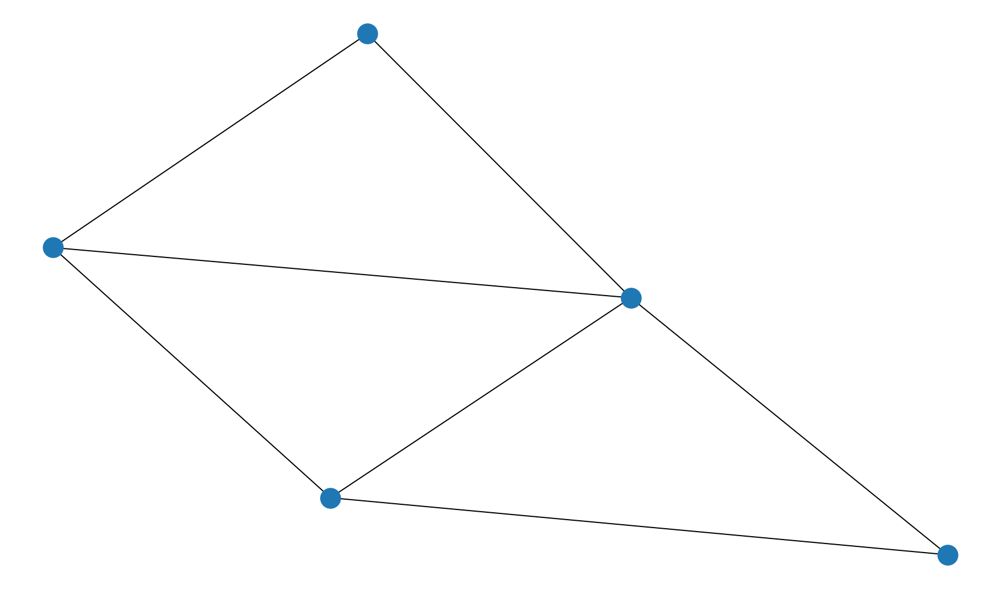

NSCI0007 Practice Exam 2¶
Specimen Answers and Mark Scheme¶
The specimen code below demonstrates one way to correctly answer the questions.
Full marks will be awarded if the candidate has implemented another suitable method and the code behaves as specified in the question.
If the candidate’s code produces an error, or does not behave as specified in the question, partial credit will be awarded as described in the mark scheme.
Where a candidate has used a different method to below, partial credit will be awarded in an analogous way.
import matplotlib.pyplot as plt
import numpy as np
def start(theta):
state[0] = 0
state[1] = 0
state[2] = 0
state[3] = theta
fig = plt.figure(figsize=(5,5))
ax = fig.add_subplot(111)
ax.set_aspect('equal', adjustable='box')
def draw_forward():
x = state[0]
y = state[1]
angle = state[2]
state[0] = x + np.cos(angle)
state[1] = y + np.sin(angle)
plt.plot([x, state[0]], [y, state[1]], color="black",
linewidth=2)
def rotate_left():
theta = state[3]
state[2] = state[2] + theta * np.pi / 180
state = [0, 0, 0, 0]
# Example: draw an L
start(90)
draw_forward()
rotate_left()
draw_forward()
Question 1¶
def rotate_right():
theta = state[3]
state[2] = state[2] - theta * np.pi / 180
start(60)
draw_forward()
rotate_left()
draw_forward()
rotate_right()
rotate_right()
draw_forward()
rotate_left()
draw_forward()
# [1] correct rotate_right function definition
# [1] call start with correct angle
# [1] correct sequence of function calls
Question 2¶
def draw_sequence(sequence, angle):
start(angle)
for c in sequence:
if c == "F":
draw_forward()
if c == "-":
rotate_left()
if c == "+":
rotate_right()
draw_sequence("F-F++F-F", 60)
# [1] call start
# [1] loop over characters
# [1] if statements
# [1] test passes correctly

Question 3¶
def apply_koch_rule(sequence):
s = ""
for c in sequence:
if c == "F":
s += "F-F++F-F"
else:
s += c
return s
def apply_koch_rule_2(sequence):
return sequence.replace("F", "F-F++F-F")
apply_koch_rule("XFAF")
# [1] character replacement by either of above methods
# [1] test passes correctly
'XF-F++F-FAF-F++F-F'
Question 4¶
sequence = "F"
for i in range(3):
draw_sequence(sequence, 60)
sequence = apply_koch_rule(sequence)
# [1] loop with correct number of iterations
# [1] call two functions
# (alternatively use repeated code instead of loop)

Question 5¶
def apply_hilbert_rules(sequence):
s = ""
for c in sequence:
if c == "X":
s += "-YF+XFX+FY-"
elif c == "Y":
s += "+XF-YFY-FX+"
else: s += c
return s
apply_hilbert_rules("XY")
sequence = "X"
for i in range(3):
sequence = apply_hilbert_rules(sequence)
draw_sequence(sequence, 90)
# [1] loop over characters in string
# [1] if-elif statement
# [1] string concatentation
# [1] test passes correctly and three iterations drawn
# -1 if rewriting fails in general case (e.g. using string.replace)

Question 6¶
def apply_rules(sequence, rule_list):
symbol_list = []
string_list = []
for rule in rule_list:
a, b = rule.split("->")
symbol_list.append(a)
string_list.append(b)
s = ""
for c in sequence:
if c in symbol_list:
i = symbol_list.index(c)
d = string_list[i]
s += d
else:
s += c
return s
s1 = apply_rules("AB", ["A->AB", "B->BA"])
s2 = apply_rules("AB", ["A->XY", "B->XZ"])
print(s1, s2)
# [2] construct lists of symbols and strings
# [1] loop over characters
# [2] identify rule corresponding to character
# [1] concatenate string appropriately
# [1] tests pass correctly
# -1 if rewriting fails in general case (e.g. using string.replace)
# -1 if fails for rule_list of length more than 2
# -1 if fails for rule_list of length 1
ABBA XYXZ
Question 7¶
import csv
def draw_l_system(axiom, theta, rule_list, n):
for i in range(n):
axiom = apply_rules(axiom, rule_list)
draw_sequence(axiom, theta)
with open("lsysdata.txt") as f:
reader = csv.reader(f)
next(reader)
for row in reader:
name = row[0]
n = int(row[1])
angle = float(row[2])
axiom = row[3]
rules = row[4:]
draw_l_system(axiom, angle, rules, n)
plt.title(name)
# [1] open file for reading
# [1] read one row at a time, omitting first line
# [2] identify name, n and angle with type conversion
# [1] extract rules as list of strings
# [2] draw the specified l-system
# [1] add title to plot
# -1 for each assumption the code makes about the contents of the file
# (e.g. number of lines)